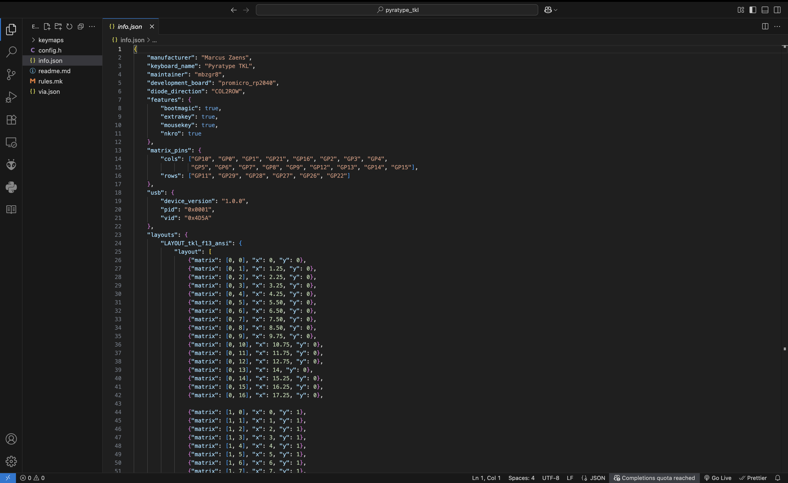
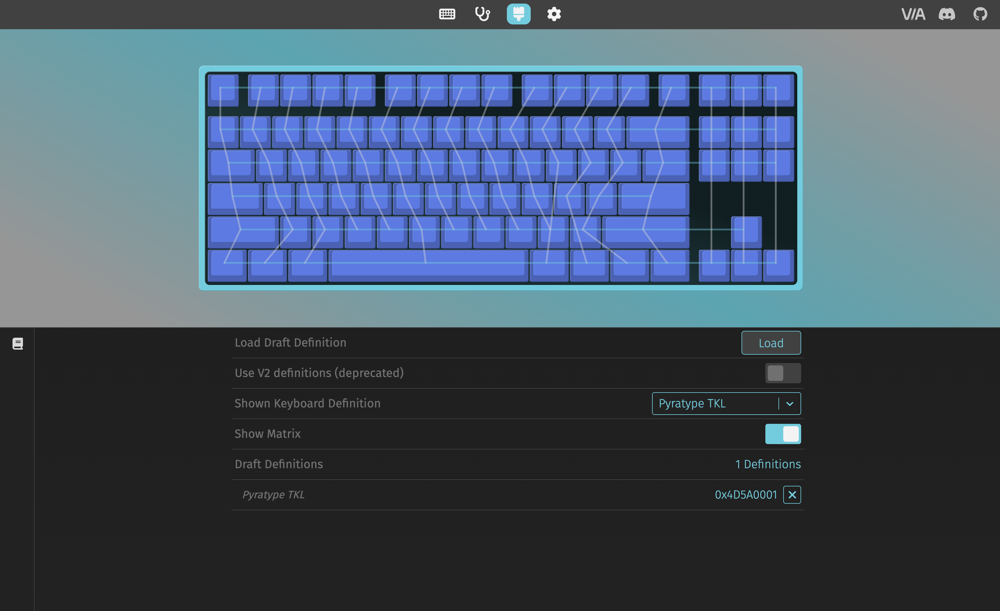
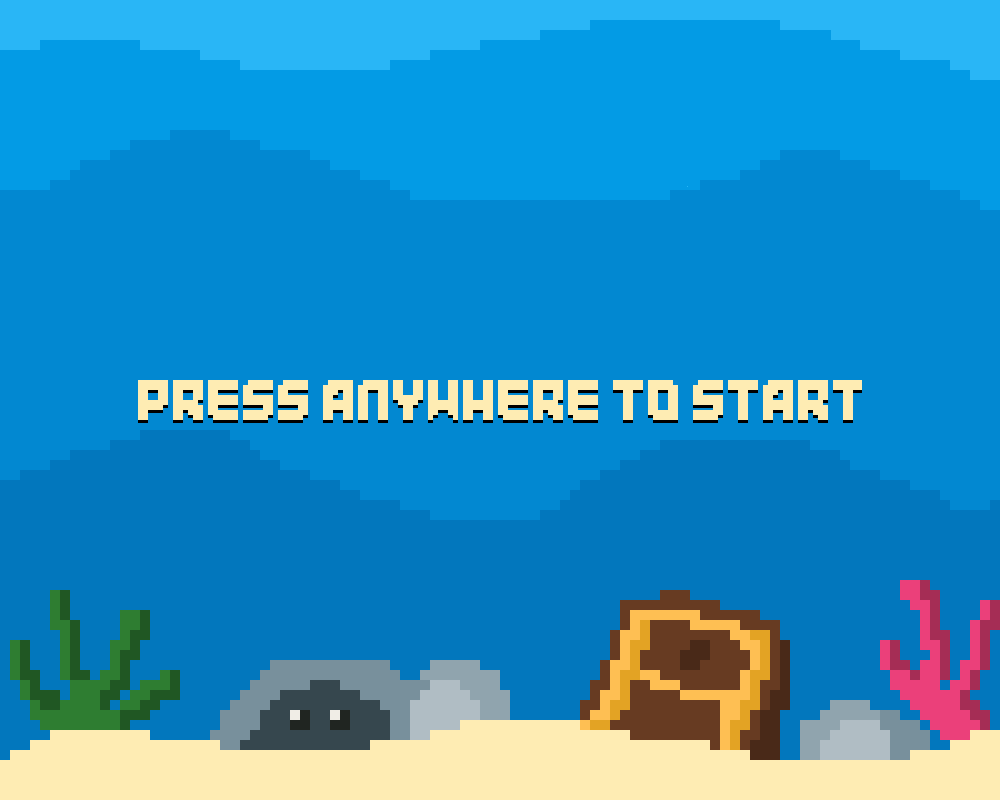
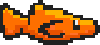
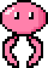
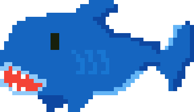

Endless Fish Swimmer Using MediaPipe, OpenCV, and PyGame
This project was the improvement or remake of a prior mini-game I had developed using Python's Pygame library. Inspired by games such as Flappy Bird and Temple Run, I wanted to make a simple, arcade-style mini game that had no "end goal".
The game features three lanes to move from and incoming obstacles that the fish (the player) must avoid. The player controls the fish's movement within the three lanes with their nose, marked with a red circle.
Before I could start designing sprites or the game environment, I first needed to determine how to open a PyGame window and OpenCV camera at the same time.
Starting with the video feed, I first setup the camera to properly reflect the player's movements. This involved flipping and recoloring the screen and marking the three lanes with green lines.
The PyGame window came next, including setting up the game loop and MediaPipe face tracking.
After setting up both windows, I moved onto actually marking and tracking the player's nose. I decided to use MediaPipe's Face Mesh and keep the default parameters. Isolating just the nose feature, I denoted its location with a red circle.


After locating the player's nose from the camera feed, I set a simple square to move to one of the three lanes in the PyGame window. I roughly divided the screen height by 3 and set y-coordinates for each lane. Once it worked, I started working on the main game loop and sprite designs.
I first decided to create an animated home screen where the player could see their high score before playing. I set a game flag for any keyboard or mouse activity to then start the main game loop. Once the game loop started, I needed to add obstacles for the player to avoid.

I coded several helper functions that would manage collision detection, obstacle generation, and difficulty scaling as the player survived longer and longer.
To detect the collision between the player and obstacles, I created a list containing of all obstacles/sprites I would be using. If there were any collision, I pushed the obstacle back for the player to move, set an invincibility period for the player, and also reduced the number of the player's lives.
obstacles = [fishing_rod_rect, jellyfish_rect, shark_rect]
def check_collision():
global invincible, invincible_duration, last_hit_time, num_lives
global fishing_rod_float_x, jellyfish_float_x, shark_float_x
current_time = pg.time.get_ticks()
collision = fish_rect.collidelist(obstacles)
if collision != -1:
if not invincible:
invincible = True
num_lives -= 1
last_hit_time = current_time
fish_rect.x = max(0, fish_rect.x-20)
for obj in obstacles:
obj.x += 400
fishing_rod_float_x = float(fishing_rod_rect.x)
jellyfish_float_x = float(jellyfish_rect.x)
shark_float_x = float(shark_rect.x)
if current_time - last_hit_time > invincible_duration and invincible:
invincible = False
After the obstacles drifted off screen, I needed to ensure that spawning them in always left an open path for the player to take. I would also need to ensure that this path was always available as the difficulty increaeses.
def spawn():
global min_respawn, max_respawn
global fishing_rod_float_x, jellyfish_float_x, shark_float_x
collision = fish_rect.collidelist(obstacles)
if collision != -1:
obstacles[collision].x = -100
if collision == 0: fishing_rod_float_x = -100.0
if collision == 1: jellyfish_float_x = -100.0
if collision == 2: shark_float_x = -100.0
for object in obstacles:
if object.right < 0:
max_distance = max(obj.x for obj in obstacles)
new_x = max_distance + random.randint(min_respawn, max_respawn)
jellyfish_upcoming_x = jellyfish_rect.x if object != jellyfish_rect else new_x
shark_upcoming_x = shark_rect.x if object != shark_rect else new_x
if abs(jellyfish_upcoming_x - shark_upcoming_x) < 300:
if object == fishing_rod_rect:
new_x = min(jellyfish_upcoming_x, shark_upcoming_x) + 150
for other in obstacles:
if other != object:
if abs(new_x - other.x) < 350:
new_x = other.x+350
object.x = new_x
if object == fishing_rod_rect: fishing_rod_float_x = float(new_x)
elif object == jellyfish_rect: jellyfish_float_x = float(new_x)
elif object == shark_rect: shark_float_x = float(new_x)
While obstacle generation and collision detection worked, the game would feel slow and boring without any difficulty scaling. As the player survives longer, I used logarithms, minimums and maximums to scale the obstacles' speeds, leaving the player with less and less reaction time. Additionally, the spacing between obstacles become smaller, leaving the player less room to switch lanes.
def difficulty_scaling():
global fishing_rod_rect_scroll_speed, jellyfish_rect_scroll_speed, shark_rect_scroll_speed, background_scroll_speed
global min_respawn, max_respawn
current_time =(pg.time.get_ticks()-start_time)/1000
base_modifier = math.log(current_time+1) * 3.5
current_speed = min(16, 6+base_modifier)
fishing_rod_rect_scroll_speed = current_speed
jellyfish_rect_scroll_speed = current_speed
shark_rect_scroll_speed = current_speed
background_scroll_speed = max(4, current_speed - 2)
reaction_time_frames = 45
base_spawn_distance = int(current_speed * reaction_time_frames)
spacing_compression = max(0.45, 1.0 - (num_score/ 4000.0))
min_respawn = int(base_spawn_distance * spacing_compression)
max_respawn = min_respawn + int(600 *spacing_compression)
Once the core game logic was working, I could finally start on designing the game environment. That meant creating sprites, the various backgrounds, and animations for all of them.



I decided to use a pixel-style theme throughout my game as this would be easier to design, animate, and load into the PyGame window. I decided the player should be a fish, dodging obstacles such as fishing rods, jellyfish, and sharks in the three lanes. I used PixilArt to create my sprites and plan out their animations to look natural and immersive.
After designing the sprites and loading the images, I created a helper function to manage their individual animations.
I also included a game score proportional to how long the player survives and also implemented a high score feature that writes and saves the player's highest score to a .txt file.
Lastly, I used Google Fonts to replace the default text, polished animations, and play-tested to smooth out any issues.
More content could be added to improve game immersion and difficulty scaling. Some ideas for improvement were to add warning symbols for incoming obstacles and include additional gestures or actions with facial features and MediaPipe. Additional ideas include returning to the home screen upon losing or integrating the OpenCV camera into the PyGame window.